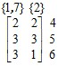

электронный
ресурс по учебной дисциплине
1-40 02 01 «Вычислительные машины, системы и сети»
|
||
| Оглавление | Программа | Теория | Практика | Контроль знаний | Об авторах | ||
Минимизация не полностью определенных булевых функций
19.1. Постановка задачи
Описание поведения проектируемого устройства может допускать такие ситуации, когда реакция устройства на некоторые комбинации входных сигналов не определена. В частности, может оказаться, что некоторые входные сигналы не являются независимыми. Например, некоторые сигналы таковы, что соответствующие им переменные xi и xj не могут принимать одновременно значение 1. Значения функций, соответствующих выходным сигналам, на всех наборах, где xi = xj = 1 считаются безразличными. На таких наборах значений входных переменных функции можно доопределять как угодно, и желательно давать им при этом такие значения, которые приводят к упрощению реализующих схем.
Не полностью определенная функция разбивает булево пространство М на три подмножества: М1, М0 и М– – области, где соответственно функция имеет значения 1, 0 и не определена. Для задания функции достаточно задать два подмножества, например, М1 и М0.
Не полностью определенную булеву функцию можно задавать картой Карно, помещая знак × в клетки, где функция не определена. Пусть, например, функция задана картой Карно на рис. 19.1а. Оптимальный вариант ее доопределения представлен на рис. 19.1б. В этом случае область М1 покрывается двумя интервалами из объединения М0 ∪ М– и на этих интервалах функции придаем значение 1. Соответствующая ДНФ имеет вид ¬х1¬х4 ∨¬х3.
Рис. 19.1. Доопределение булевой функции: а) задание функции;
б) ее доопределение
На множестве полностью и не полностью определенных функций введем отношение реализации, которое обозначим символом ≺ или ≻ и положим, что f ≺ g (функция f реализуется функцией g) или g ≻ f (функция g реализует функцию f), если M1f ⊆ M1g и M0f ⊆ M0g.
Задача минимизации не полностью определенной функции f ставится следующим образом: для функции f найти минимальную (или кратчайшую) ДНФ среди всех ДНФ всех функций g, удовлетворяющих условию f ≺ g.
19.2. Применение метода Квайна-МакКласки
Любую не полностью определенную булеву функцию f можно рассматривать как множество полностью определенных функций, получаемых различными вариантами доопределения. Число таких вариантов . Однако нет необходимости перебирать их все. Среди вариантов доопределения функции f выделим функции fmin и fmax, которые получаются соответственно приданием значения 0 и значения 1, где f не определена. То есть , и , . Для функции f, заданной картой Карно на рис. 19.1а, варианты доопределения fmin и fmax показаны на рис. 19.2.
Рис. 19.2. Варианты доопределения функции, заданной на рис. 19.1а: а) fmin; б) fmax
Легко показать, что искомая минимальная ДНФ состоит из простых импликант функции fmax. Функция g, ДНФ которой является решением поставленной задачи, обладает свойством fmin ⇒ g ⇒ fmax. Следовательно, g имеет значение 1 везде, где это значение имеет fmin, и имеет значение 0 везде, где это значение имеет fmax.
Процесс минимизации не полностью определенной булевой функции f методом Квайна-МакКласки состоит из двух этапов: 1) нахождение множества всех простых импликант функции fmax; 2) выделение из этого множества минимального подмножества, покрывающего совершенную ДНФ функции fmin.
Рассмотрим матрицы для функции f, заданной картой Карно на рис. 19.1а:
, .
Левая матрица
представляет множество ,
правая –
совокупность всех максимальных
интервалов, на которых функция fmax имеет
значение 1. Теперь надо этими интервалами
покрыть множество  . Строим
матрицу покрытия, где а1, а2, а3 а4, а5 – элементы множества
. Строим
матрицу покрытия, где а1, а2, а3 а4, а5 – элементы множества
 , а В1, В2, В3 В4 – максимальные
интервалы области :
, а В1, В2, В3 В4 – максимальные
интервалы области :
.
Кратчайшее покрытие этой матрицы составляют строки В1 и В3. Окончательное решение имеет вид f =¬х1¬х4 ∨¬х3, что совпадает с решением, полученным визуально по карте Карно.
19.3. Минимизация слабо определенной функции
Часто на практике встречаются булевы функции, область определения которых занимает небольшую часть булева пространства ее аргументов, т. е. |М1| + |М0| << |М–|. Если применять описанный метод для минимизации такой функции f, то многие из простых импликант функции fmax будут соответствовать интервалам, которые целиком содержатся в множестве М– и бесполезны для выполнения второго этапа минимизации. Поэтому стóит развивать методы, учитывающие данную специфику.
Для описания одного из таких методов, выполнение которого исключает рассмотрение элементов множества М–, введем некоторые понятия.
Интервально поглощаемым множеством называется множество элементов из М1, для которых существует интервал, содержащий все эти элементы и не пересекающийся с множеством М0. Интервально поглощаемое множество является максимальным, если оно не содержится в качестве собственного подмножества в другом интервально поглощаемом множестве.
Рассматриваемый метод заключается в получении всех максимальных интервально поглощаемых множеств и в последующем получении кратчайшего покрытия ими элементов множества М1. Интервалы, соответствующие элементам полученного покрытия определят кратчайшую ДНФ для заданной функции. Ранги конъюнкций, составляющих полученную ДНФ следует уменьшить, максимально расширив соответствующие интервалы так, чтобы они не пересекались с множеством М0.
Для получения всех максимальных интервально поглощаемых множеств можно использовать лексико-графический перебор, подобный перебору, описанному в гл. 4 при изложении метода поиска максимальных независимых множеств в графе. При этом принимается во внимание тот факт, что если некоторое множество не является интервально поглощаемым, то не является таковым и любое множество, содержащее его в качестве подмножества.
Проверка, является ли некоторое подмножество M1i множества М1 интервально поглощаемым множеством, довольно проста. Надо построить минимальный покрывающий интервал для M1i, т. е. наименьший по мощности интервал, содержащий все элементы множества M1i, и затем проверить, не пересекается ли он с множеством М0.
Компоненты вектора, представляющего минимальный покрывающий интервал для M1i, находятся следующим образом: если значения одноименных компонент булевых векторов, принадлежащих M1i, совпадают, то это значение присваивается соответствующей компоненте получаемого троичного вектора, а если нет, то данная компонента принимает значение «–».
Например, для трех векторов (1 0 1 1 1 0 0), (0 0 1 0 1 1 0) и (1 0 1 1 0 1 0) получим троичный вектор (– 0 1 – – – 0), который представляет минимальный покрывающий интервал для данных булевых векторов.
Пусть булева функция задана следующими матрицами:
М1 =  , М0 =
, М0 =
 .
.
Данная функция является слабо определенной, так как из всех 64-х элементов булева пространства только 12 составляют область определения функции.
Множество {1, 2} является интервально поглощаемым, так как минимальный покрывающий интервал (– 0 1 – – 0) не пересекается с множеством М0. Добавление к нему элемента 3 превращает его в множество, которое не является интервально поглощаемым, так как минимальный покрывающий интервал для него (– – – – – 0) содержит векторы (0 0 0 1 0 0) и (0 1 0 0 1 0), принадлежащие множеству М0. Нельзя также добавлять к множеству {1, 2} элементов 4 и 5. Максимальным интервально поглощаемым множеством является множество {1, 2, 6, 7}, так как минимальный покрывающий интервал для него (– – 1 – – 0) не пересекается с множеством М0 и дальнейшее расширение этого множества без потери свойства интервальной поглощаемости невозможно.
Продолжая данный перебор, получаем следующие максимальные интервально поглощаемые множества и соответствующие им минимальные покрывающие интервалы:

Множества {1, 2, 6, 7}, {1, 3} и {2, 4, 5, 7} составляют кратчайшее покрытие множества М1. После расширения второго интервала получаем троичную матрицу
и соответствующую ей ДНФ х3¬х6 ∨ х4 х5 ∨¬х2¬х4.
19.4. Расширение интервалов
В данном примере минимальные покрывающие интервалы оказались довольно широкими, и расширить удалось только один из них и только в одном направлении (заменив 0 на «–» во втором интервале). Расширять интервал можно, последовательно заменяя единицы и нули на символ «–» в соответствующем троичном векторе (двигаясь слева направо или справа налево), пока очередное расширение не захватит элемент из множества М0. Но в этом случае нет гарантии получения минимума ранга интервала. Например, надо расширить интервал, представляемый вектором (0 1 – 1 0), но так, чтобы он не пересекался с множеством булевых векторов, заданном матрицей
.
Если по порядку расположения компонент пытаться заменять единицы и нули на «–», то получим не самый широкий интервал (– 1 – 1 0), в то время как можно получить лучше: (0 1 – – –).
Поставим следующую задачу. В троичном векторе и, ортогональном всем строкам троичной матрицы U, заменить максимальное число значений 0 и 1 на «–» так, чтобы он оставался ортогональным всем строкам матрицы U.
Можно решать эту задачу следующим образом. Строим матрицу различий вектора и по отношению к строкам матрицы U. Строки матрицы различий соответствуют строкам матрицы U, и каждая из них показывает, по каким компонентам вектор и отличается от соответствующей строки матрицы U. Для этого строка матрицы различий получается путем покомпонентного сложения по модулю два соответствующей строки матрицы U с сектором и. При этом считается, что 0 ⊕ – = 1 ⊕ – = 0. Для матрицы различий надо найти минимальную совокупность столбцов такую, чтобы каждая строка матрицы различий имела в данной совокупности хотя бы одну единицу. То есть надо покрыть строки минимальным числом столбцов. В векторе и оставляются прежние значения только для тех компонент, которые соответствуют столбцам из полученной совокупности. Остальные компоненты принимают значение «–».
Для приведенной выше матрицы и вектора и = (0 1 – 1 0) матрица различий имеет вид
.
Кратчайшее столбцовое покрытие этой матрицы составляют ее первые два столбца. Следовательно, решением является вектор (0 1 – – –).
19.5. Метод конкурирующих интервалов
При большой размерности задачи точные метода оказываются негодными из-за большого времени их выполнения. Поэтому, как отмечалось выше, для практики важно иметь приближенные методы, которые получают не самые плохие результаты, затрачивая на это приемлемое машинное время. Таким методом является метод упрощения булевой функции с помощью карты Карно. Можно отнести к таким методам метод упрощения ДНФ путем удаления избыточных элементарных конъюнкций и литералов. Рассмотрим метод минимизации слабо определенной булевой функции, также получающий близкое к минимальному решение за приемлемое время, называемый методом конкурирующих интервалов [7].
В данном случае задача ставится следующим образом. Задана слабо определенная булева функция с помощью характеристических множеств М0 и М1. Требуется найти по возможности минимальную (или близкую к ней) совокупность интервалов из множества М0 ∪ М1, покрывающую М1.
Текущая ситуация (после i-го шага итерации) характеризуется следующим. Пусть имеется совокупность интервалов Vi множества M1 ∪ M−, не обязательно максимальных, покрывающих некоторую часть множества M1, а также имеется Mi* – некоторый остаток, образуемый теми элементами множества M1, которые не принадлежат ни одному из интервалов множества Vi. На очередном, (i + 1)-м шаге множество Vi преобразуется в новое частичное решение Vi + 1, причем так, чтобы непокрытый остаток Mi* сократился, по крайней мере, на один элемент.
Очередной шаг выбирается на основе информации, заключенной в булевой матрице Сi отношения совместимости элементов из множества Mi* с интервалами из множества Vi. Элемент т считается совместимым с интервалом и, если в множестве M1 ∪ M− существует интервал v, поглощающий как m, так и u. Строкам матрицы Сi соответствуют элементы множества Mi*, а столбцам – интервалы из множества Vi. Единица на пересечении строки и столбца показывает совместимость соответствующих элемента булева пространства и интервала.
Если в матрице Сi существует строка без единиц, то это означает, что соответствующий ей элемент m из множества Mi* не совместим ни с одним из интервалов, составляющих множество Vi. В этом случае множество Vi дополняется новым интервалом, содержащий лишь элемент m. Данная строка удаляется из матрицы Сi.
Если в матрице Ci существует столбец без единиц, то это означает, что соответствующий интервал из множества Vi не может быть расширен так, чтобы покрыть какой-либо из элементов множества Mi*. В этом случае он произвольно расширяется, если это возможно, на множестве M1 ∪ M− и принимается в качестве одного из элементов окончательного решения. Данный столбец удаляется из матрицы Сi.
Если в матрице Ci существует столбец, содержащий одну единственную единицу, то это означает, что соответствующий интервал u может быть использован для покрытия только одного из элементов множества Mi*. Интервал u соответственно расширяется (чтобы покрыть элемент множества Mi*, поставленный в соответствие указанной строке) и включается в окончательное решение. Соответствующие строка и столбец удаляются из матрицы Сi.
Если не выполняется ни одно из перечисленных условий, то производится выбор.
Отыскивается минимальный по числу элементов интервал u среди интервалов из множества Vi, а затем среди совместимых с ним элементов множества Mi* выбирается ближайший к нему элемент m. Расстояние определяется по Хэммингу. Расстояние до интервала – это расстояние до ближайшего входящего в него элемента, которое определяется как расстояние в графе гиперкуба или длина кратчайшей цепи. Оно измеряется числом компонент, по которым ортогональны вектор т и троичный вектор, представляющий интервал и. Интервал u соответственно расширяется (чтобы покрыть элемент т) и включается в решение. Соответствующая строка удаляется из матрицы Сi, и корректируется столбец, соответствующий интервалу и.
В исходной ситуации можно принять в качестве V0 два одноэлементных интервала, состоящих из элементов множества M1, для которых минимальный покрывающий их интервал пересекается с множеством M0, а в качестве элементов множества M0* – остальные элементы множества M1.
Применим данный метод минимизации к следующей булевой функции, рассмотренной при изложении точного метода (разд. 19.3):
М1 = , М0 = .
В качестве V0 возьмем несовместимые элементы 1 и 2. Матрица С0 и соответствующая матрица расстояний (для несовместимых пар вместо расстояния используем знак «–») примут следующий вид, где интервалы обозначаются множествами покрываемых ими элементов множества М1:
С0 = , .
Выбираем пару {1}, 7 с минимальным расстоянием, формируем множество {1, 7} и соответствующий интервал (1 0 1 – 1 0). Представленная ниже матрица С1 имеет нулевую строку, поэтому следующим шагом является удаление нулевой строки из матрицы С1, соответствующей множеству {3}, и добавление к ней столбца {3}, который не имеет единиц. Таким образом, получаем элемент решения в виде интервала, содержащего элемент 3 множества М1. После допустимого расширения этот интервал представит вектор (– – – 1 1 –). Последовательность матриц вместе с матрицей расстояний, соответствующей матрице С3, приведена ниже.
С1 =, С2 =. С3 = .
Матрица расстояний, соответствующая матрице С3, имеет следующий вид:
.
Поскольку минимальным расстоянием является расстояние между элементами булева пространства 2 и 6, формируем множество {2, 6} и соответствующий интервал (0 – 1 0 0 0). Получаем матрицу С4, из которой видно, что процесс завершается образованием множества {2, 4, 6} с соответствующим интервалом (– – – 0 0 –) и множества {1, 5, 7} с соответствующим интервалом (– 0 – – 1 –):
С4 =.
Окончательный результат представим в виде троичной матрицы
что соответствует дизъюнктивной нормальной форме х4 х5 ∨¬х4¬х5 ∨¬х2 х5.
| (С) БГУИР |